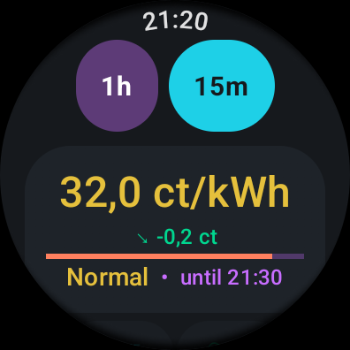
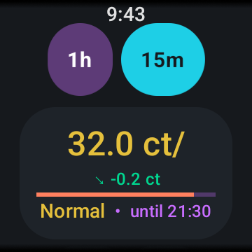
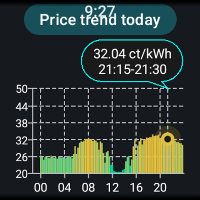
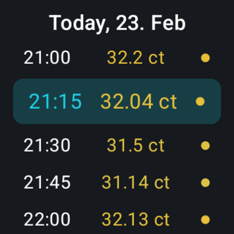
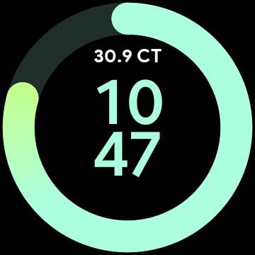

Current Spot bringt Tibber-Spotpreise und Live-Verbrauchsdaten auf deine Wear OS Smartwatch.
Ohne dein Smartphone in die Hand zu nehmen.

Inoffizielle Drittanbieter-App • Nicht verbunden mit Tibber AS
Aktuelle Strompreise alle 15 Minuten oder stündlich aktualisiert, direkt auf dem Zifferblatt.
Interaktiver Graph mit Preisverlauf für heute und morgen – stündlich und im 15-Minuten-Takt.
Überwache deinen aktuellen Stromverbrauch direkt am Handgelenk. Voraussetzung: Tibber Pulse.
Berechnet automatisch die günstigsten Zeitfenster in den nächsten 24–48 Stunden.
Füge Komplikationen zu jedem Zifferblatt hinzu oder nutze das Tile für schnellen Zugriff ohne App-Start.
Verbindung per Bluetooth über dein Smartphone für stromsparendes Live-Daten, oder direkt per WiFi/LTE.
Die offizielle Tibber-App ist toll auf dem Smartphone – aber es gibt keine Tibber-App für Wear OS. Current Spot füllt genau diese Lücke.
Runde Layouts, Krone-Scrolling und Zifferblatt-Komplikationen – von Anfang an für Wear OS entwickelt, keine auf klein geschrumpfte Handy-App.
Keine Analytics, keine Werbung, kein Tracking. Dein Tibber-Token liegt nur auf deinen Geräten und wird direkt gegen die offizielle Tibber-API verwendet.
Preise für heute und morgen werden auf der Uhr gespeichert. Einmal abgerufen, funktioniert die App auch ohne Verbindung weiter.
Nutzt dein Smartphone als stromsparendes Bluetooth-Relay, und schaltet automatisch auf WiFi/LTE um, wenn das Smartphone außer Reichweite ist.




Installiere Current Spot aus dem Google Play Store auf deinem Smartphone und deiner Wear OS Uhr. Beide Apps sind im selben Play-Store-Eintrag enthalten.
Melde dich auf developer.tibber.com mit deinem Tibber-Konto an und erstelle einen persönlichen Zugriffstoken. Aktiviere die Berechtigungen home und real-time, wenn du Live-Verbrauch nutzen möchtest.
Öffne die Current Spot Begleit-App auf deinem Smartphone, füge den Token ein und wähle dein Zuhause aus. Die App prüft den Token sofort bei Tibber.
Öffne Current Spot auf der Uhr. Die Konfiguration wird automatisch per Bluetooth von deinem Smartphone übernommen. Füge die Komplikation zu deinem Lieblings-Zifferblatt hinzu oder pinne das Tile für Zugriff mit einem Wisch.
Brauchst du Hilfe? Erstelle ein Issue auf GitHub – Antwort meistens innerhalb von 24 Stunden.
Ja, du brauchst ein aktives Tibber-Konto. Die App zeigt deine persönlichen Strompreise von Tibber an.
Nein. Current Spot ist eine inoffizielle, von der Community entwickelte App. Sie steht in keinerlei Verbindung mit Tibber AS.
Current Spot läuft auf allen Wear-OS-Geräten ab Wear OS 3.0 – z.B. Samsung Galaxy Watch 4, 5, 6 und 7, Google Pixel Watch und weitere Wear-OS-Smartwatches.
Installiere die Begleit-App auf deinem Smartphone, erstelle unter developer.tibber.com einen persönlichen Zugriffstoken und koppele deine Uhr per Bluetooth oder WiFi.
Ja! Nach der Einrichtung kann die Uhr Preise direkt per WiFi oder LTE abrufen. Für Live-Verbrauchsdaten bietet das Bluetooth-Relay über die Begleit-App eine stromsparende Alternative.
Current Spot ist kostenlos. Alle Kernfunktionen sind ohne Kosten nutzbar. Optionale Spenden schalten Live-Verbrauch-Komplikationen und Bonus-Zifferblätter frei.
Lade Current Spot jetzt herunter und bleib über Energiekosten informiert.
Jetzt bei Google Play laden